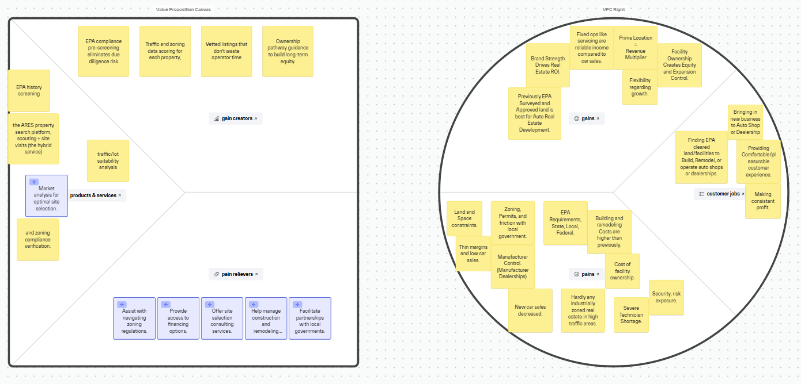

Value Proposition
Built directly from conversations with auto shop owners, dealership GMs, and CRE professionals across the South Sound. These aren't hypothetical pain points — they're what we heard, visit after visit.
Unique Value Proposition
Independent auto repair shops and dealerships face real estate challenges that most brokers don't specialize in. ARES does.
Pain Relievers
Every pain point below was confirmed by real conversations across 17+ visits — from independent shop owners and auto mall dealerships to commercial real estate brokers and city planners across the South Sound.
The pain: Older automotive properties carry specific contamination risks most buyers don't know to look for — in-ground lift hydraulic fluid that leaches into soil over decades, and underground storage tanks that Washington State mandated be removed in the 1990s, leaving behind remediation obligations that transfer with the land. Most operators don't find out until they're already deep in a deal.
ARES relieves this by: Surfacing existing EPA survey data and contamination history on properties upfront — including known in-ground lift and UST risk factors — so you know what you're walking into before investing time or money.
Confirmed: Bron's Automotive, Terry's Automotive, Bruce Titus Auto Group, Leon Titus III (CBRE), Greene CommercialThe pain: Automotive operations are classified as industrial uses — which narrows the field of compatible zones, but doesn't eliminate it entirely. Some zones allow industrial uses even when that isn't the explicit zoning category. The real constraint is that compatible land in high-traffic, desirable areas is already developed for other uses: retail, office, mixed-use. By the time an operator is looking, the sites that would work are occupied — particularly for new and used car operations trying to establish in a viable market location. What's left available is either off the main road, grandfathered and at risk of losing that status after just one year of vacancy, or requires careful zone research to confirm it even qualifies.
ARES relieves this by: Identifying which zones permit automotive/industrial uses — not just explicitly-zoned sites — and surfacing parcels in those zones that are actually available before they're gone or redeveloped.
Confirmed: Bron's Automotive, Mullinax Ford, Bruce Titus Auto Group, Leon Titus III (CBRE), City of Olympia Planning Dept.The pain: Permits are a major hurdle for new automotive businesses. Cities aren't actively welcoming auto shops — they want shopping centers and mixed-use development. The permit process burns time and money that independent operators can't afford to waste.
ARES relieves this by: Providing clear guidance on what a site will require from building and planning departments before you commit, and connecting clients with permitting specialists when needed.
Confirmed: Bron's Automotive, Mullinax Ford, City of Olympia Planning Dept., Greene CommercialThe pain: Automotive properties have unique physical requirements — stormwater drainage systems, oil filtration, paved lots, lift infrastructure — that standard commercial properties don't account for. Missing these means expensive retrofits.
ARES relieves this by: Vetting properties against automotive-specific infrastructure requirements, so you're not discovering a drainage problem after you've signed a lease.
Confirmed: Mullinax Ford (Zach Dodge, GM), Bruce Titus Auto Group, Greene Commercial, City of Olympia Planning Dept.The pain: Dealership relocations are kept completely confidential. Independent operators don't have access to the same market intelligence that corporate chains do — they're always the last to know about opportunities.
ARES relieves this by: Building relationships across the South Sound automotive and CRE community to surface opportunities earlier, before they hit the open market.
Confirmed: Bruce Titus Auto Group, Leon Titus III (CBRE)The pain: Many older automotive properties still have grandfathered in-ground lifts — hydraulic fluid from these lifts leaches into the soil over time, creating EPA contamination that surfaces during transactions. Washington State's 1990s underground tank removal mandate added significant remediation costs to older sites. Buyers who don't know to look for these issues inherit them.
ARES relieves this by: Flagging in-ground lift history, underground tank records, and infrastructure age early in the vetting process — so hidden contamination and retrofit costs don't surface after a deal is signed.
Confirmed: Bron's Automotive (Lennie Thede, GM), Bruce Titus Auto GroupGain Creators
Beyond removing friction, ARES actively creates measurable gains for automotive businesses making real estate decisions.
Visibility drives walk-in traffic, which drives revenue. ARES identifies high-visibility, automotive-compatible sites that create equity simply by being seen — not just sites that are technically available.
Owning your property builds long-term equity and provides expansion control. ARES helps operators understand when ownership makes sense versus leasing — and identifies properties positioned for ownership.
Previously EPA-surveyed and approved land is the gold standard for automotive real estate development. ARES surfaces these properties so clients can move fast with confidence instead of starting from scratch.
Finding EPA-cleared land or facilities with room to build, remodel, or operate saves years of negotiation and regulatory delay. ARES vets for outward expansion potential — the preferred growth path for dealerships and shops alike.
The right location in the right market opens doors to new customers. ARES considers traffic counts, demographics, and proximity to complementary businesses — the same factors that manufacturers use when approving dealership territories.
A well-located, properly-designed facility creates a customer experience that drives repeat business and referrals. ARES helps clients think beyond square footage to what the property communicates to customers.
Value Proposition Canvas
